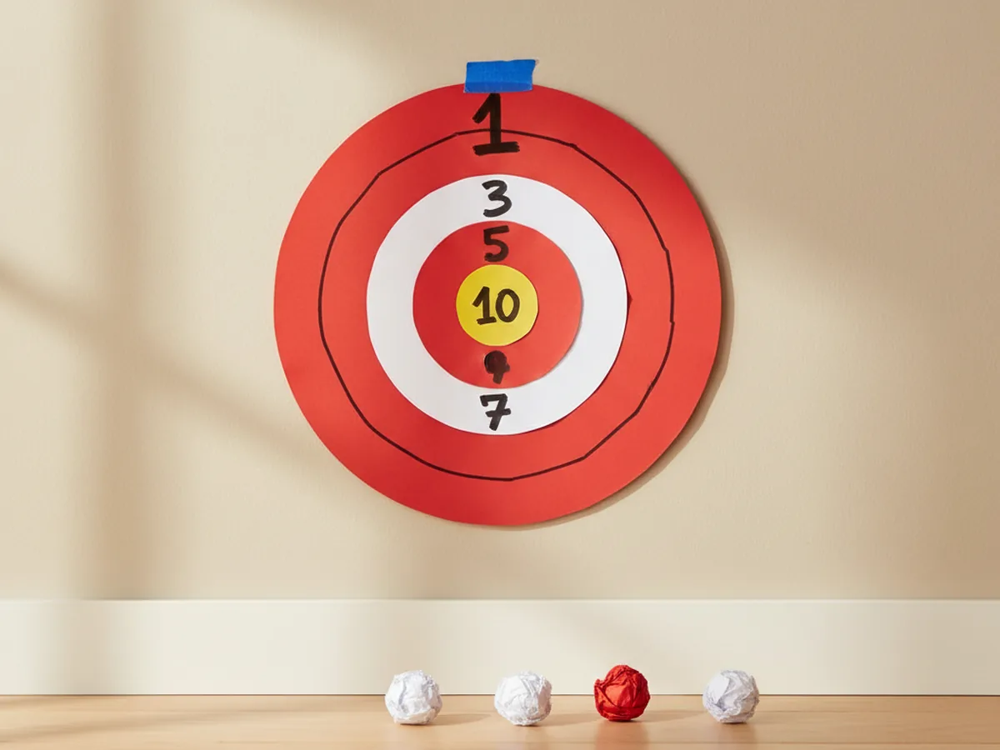
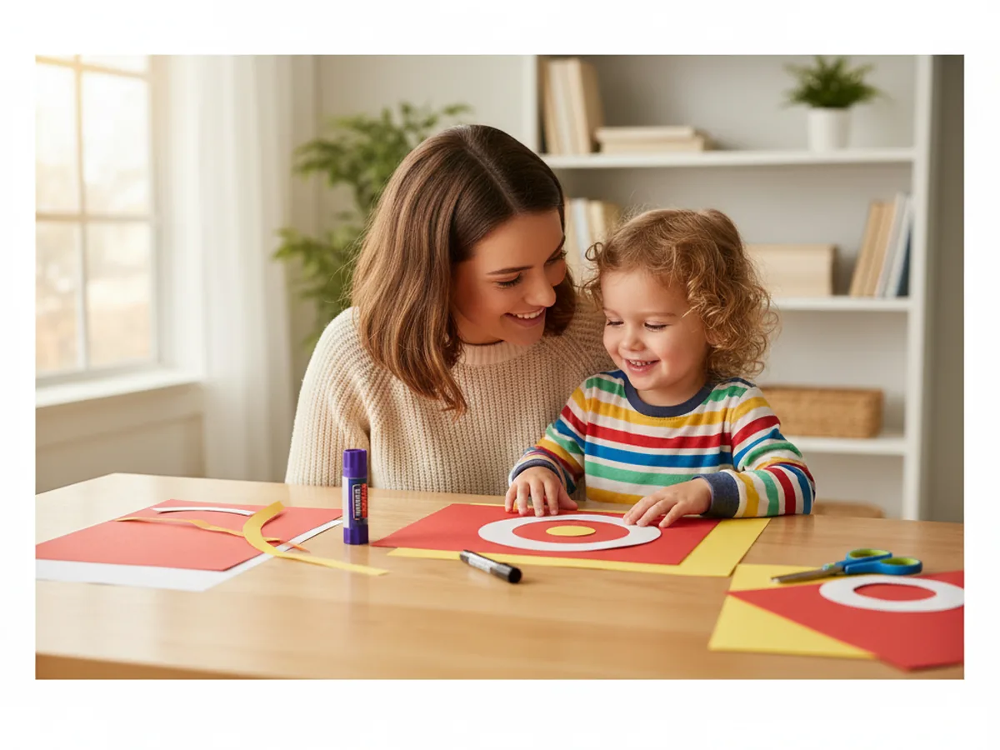
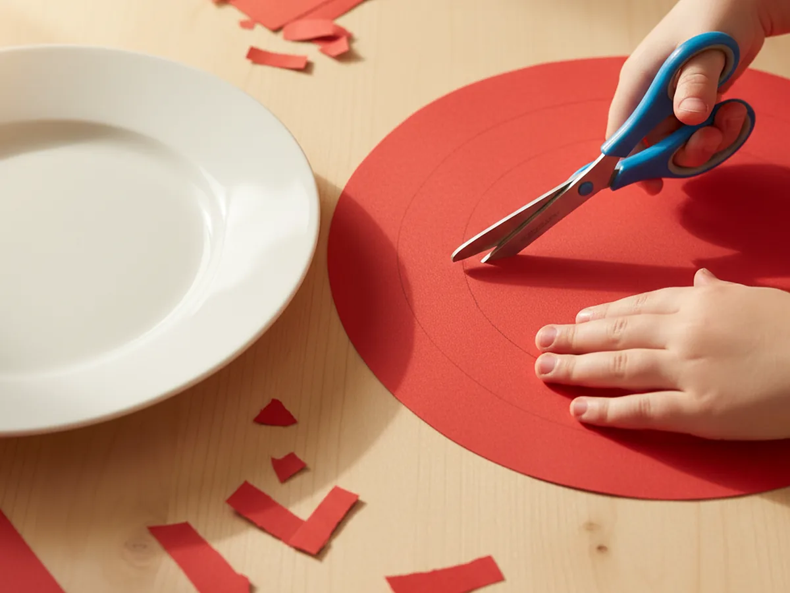
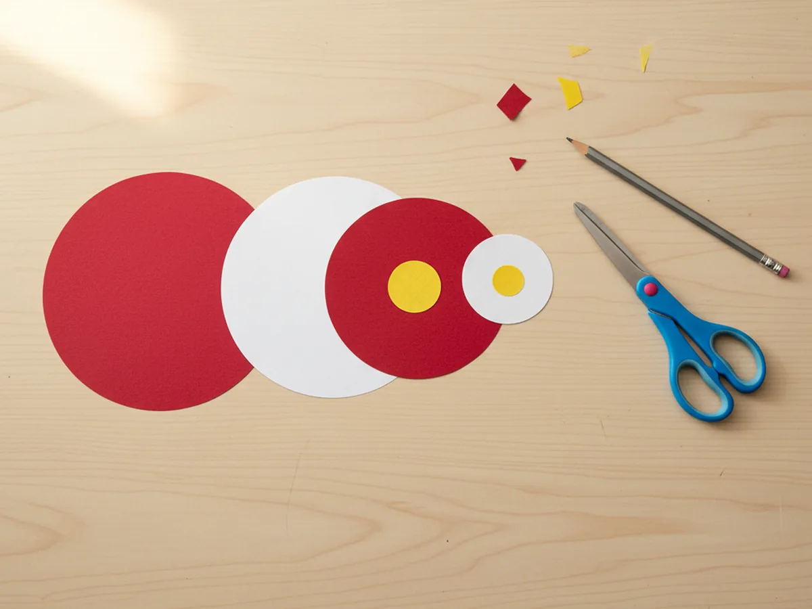
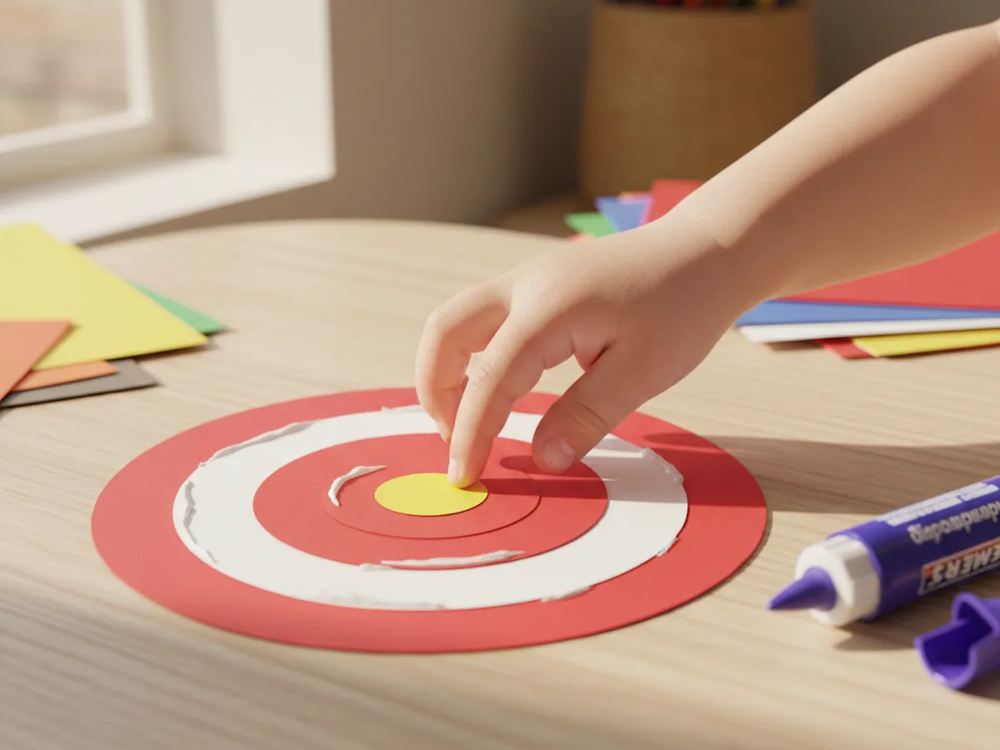
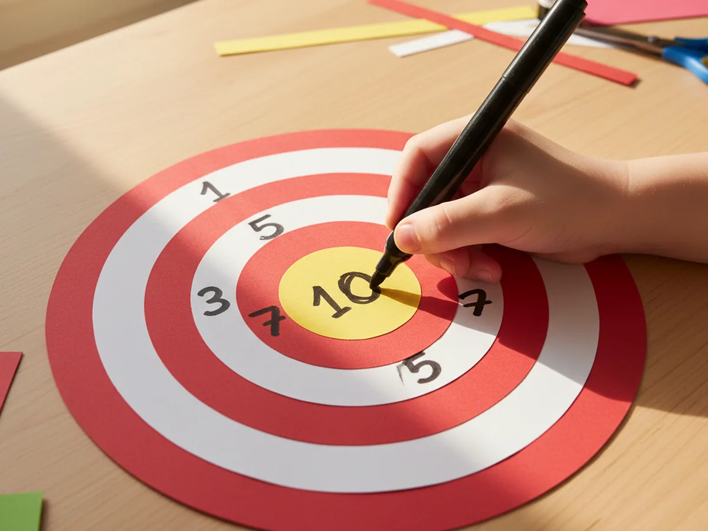
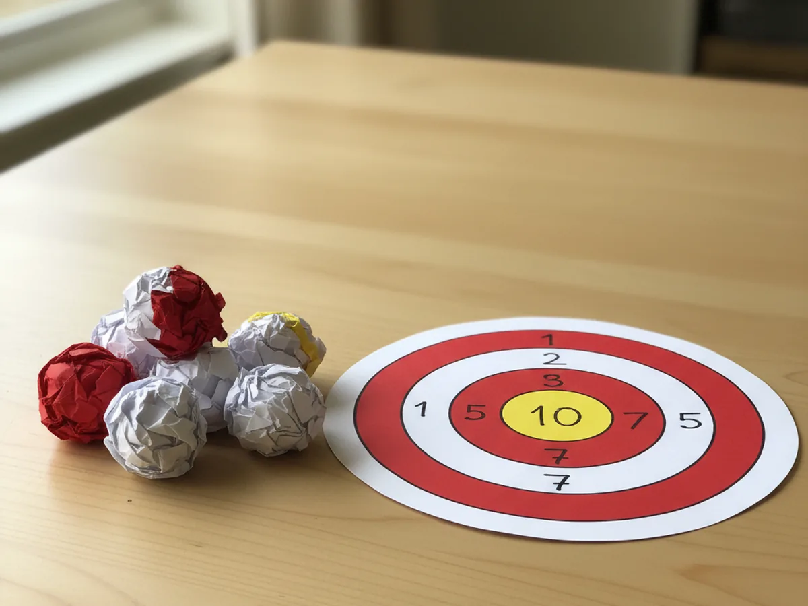
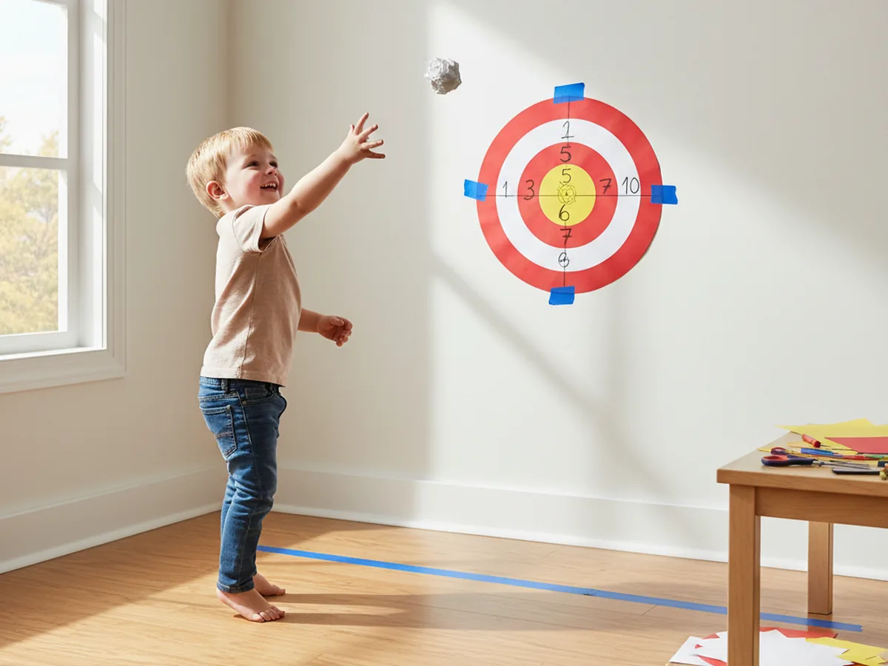

If you are looking for one craft that doubles as both a quiet creative project and a giggly afternoon activity, this target craft paper bullseye is going to feel like an instant win. You stack a few brightly colored circles, glue them together, add scoring numbers, and just like that you have a homemade carnival-style target your kids can play with for hours. It is the kind of project that feels just a little bit special when you finish it. 🎯
The whole thing comes together in about thirty minutes with construction paper, scissors, and a glue stick, and the cleanup is genuinely tiny. Even better, when you crumple a few scraps into soft toss balls at the end, you turn the finished craft into a real game your child can play right away. This simple target craft paper project is one of my favorites for a rainy Saturday or a long quiet morning at home.
Why Kids Love This Craft
Kids light up the moment they realize a craft is also going to become a game. With this paper target craft, there is a built-in payoff at the end of every step, and that keeps even the youngest crafters excited and engaged from start to finish. The bright red, white, and yellow rings feel cheerful and inviting, and the scoring numbers turn it into a tiny scoreboard adventure where every toss feels like a small celebration.
There is real developmental value here too. Cutting the circles works on scissor control. Stacking and centering the rings teaches spatial awareness and patience. Adding numbers introduces early counting and value comparison in a playful way. Then once it is hanging on the wall, the actual toss game builds hand-eye coordination, focus, and turn-taking, which are skills that quietly grow stronger every time your child plays.
And best of all, this kid-friendly target craft paper activity gets you moving and laughing together. There is something about the soft thump of a paper ball hitting the wall that makes everyone, even the parents, want to take another turn. It is a sweet little screen-free moment that often lasts way longer than the craft itself.

What You'll Need
Here is everything you need to make this target craft paper bullseye at home. Set the supplies out on the table before you sit down with your child so the project flows smoothly without anyone digging through drawers for a glue stick.
- Crayola Construction Paper (240 Sheets, 12 Colors), gives you the red, white, and yellow shades you need for the rings.
- White Cardstock 8.5 x 11 (50 Sheets, 65 lb), optional but makes a sturdier target that lasts through lots of tosses.
- Fiskars 5 Inch Pointed-Tip Kids Scissors, ideal for small hands cutting round shapes.
- Elmer's Disappearing Purple School Glue Sticks (30 Count), washable and twists open easily for little fingers.
- Crayola Broad Line Markers (10 Classic Colors), perfect for drawing big bold scoring numbers on each ring.
- Crayola Colored Pencils (24 Count, Pre-Sharpened), useful for adding extra decoration around the rings.
- Kenkio Gold and Silver Star Stickers (3500 Count), optional but fun for adding sparkly accents around the bullseye.
- A pencil, dinner plate, and a few smaller round bowls to use as stencils for tracing the circles.
- Painter's tape or masking tape, for hanging the finished target on a wall or door.
Step-by-Step Instructions
This target craft paper project is genuinely beginner-friendly and follows a clear path from cutting to playing. Take it one step at a time and let your child do as much of the cutting and stacking as they comfortably can. 💛
Step 1: Cut the Large Outer Circle
Start with a sheet of bright red construction paper or red cardstock. Flip a dinner plate upside down onto the paper, trace around it with a pencil, then carefully cut along the line. You want the largest circle to be about ten inches across, which gives your target craft paper a nice generous outer ring. This big red base will become the lowest scoring zone of the finished bullseye.
If your child is younger, you can trace the circle and let them focus on the cutting. Cutting along a curve is wonderful practice for little hands, and a slightly wobbly edge will not be noticed once everything is stacked.

Step 2: Cut the Inner Ring Circles
Now cut four more circles, each about two inches smaller than the one before it. Use a slightly smaller bowl, a coffee mug, a drinking glass, and a small jar lid as stencils. Alternate the colors so the circles go from white to red to white to red as they shrink. Finally, cut one tiny yellow circle about an inch and a half across for the center bullseye of your paper target craft.
The colors do not have to be perfect. If you want all the same color rings or a rainbow of colors instead of red and white, the craft works just as well. Let your child pick the look that excites them most.

Step 3: Stack and Glue the Rings
Lay the biggest red circle flat on the table with the back side up. Run a glue stick across the back of the next-largest white circle and press it down right in the middle of the red one. Keep going, working your way up from largest to smallest, gluing each circle perfectly centered on top of the previous one. Finish with the tiny yellow bullseye circle dead center. This is when your handmade paper target craft really starts to look like the real thing.
Take a moment after each ring to let your child press it down firmly. Pressing slowly all the way around the edges helps the glue grab nicely so the rings stay flat instead of curling up later.

Step 4: Add the Scoring Numbers
Pick up a black broad line marker and write a big bold scoring number on each ring of your colorful target craft paper. Write a 1 on the outer red ring, a 3 on the next white ring, a 5 on the next red ring, a 7 on the smallest white ring, and a big 10 on the yellow center bullseye. Higher numbers in the middle make the game feel exciting because hitting the center always feels like a real win.
If your child is just learning numbers, this is a sneaky little chance to point and count together. You can also keep things simple with just three rings labeled 1, 5, and 10 for very young kids.

Step 5: Make the Soft Paper Toss Balls
While the glue dries, set your child to work crumpling six to eight pieces of scrap paper into small soft balls about the size of a golf ball. Newspaper, leftover construction paper scraps, or even old printer paper all work beautifully. Squeeze each ball tightly so it holds its shape, then tighten it again. These soft paper balls are gentle and safe for indoor play, which makes the fun target craft paper game completely worry-free.
For extra durability, wrap each crumpled ball with a small piece of masking tape so it stays rounded for many tosses. Kids love this step because the crumpling itself is satisfying.

Step 6: Hang the Target and Play
Use a few small strips of painter's tape or masking tape to stick the finished target craft paper to a clear wall or the back of a door at about your child's eye height. Mark a tossing line a few steps away with a piece of tape on the floor, then take turns aiming and tossing the soft paper balls at the target. Add up the score after every five tosses to see who is the family bullseye champion. The game tradition of aiming at a target like an archery bullseye has a long sweet history, and your living room version is one your child will want to play again and again.
Hang it on the fridge between play sessions if you like, or roll it gently and tuck it inside a drawer for the next time you need a quick activity ready to go.

Variations to Try
Paper Plate Target Version: Skip the cutting and use a stack of three or four paper plates of different sizes instead. Paint or color each plate a different shade, glue them concentrically, and write the scoring numbers on each ring. The slightly raised plate edges make the target feel even more like a real carnival game.
Animal Face Target: Turn the bullseye into a friendly cartoon animal face by adding paper ears at the top, a triangle nose in the center, and round eyes on the upper rings. Try a bear, a lion, or a fox face. Aiming for the smile or the nose makes the game feel even sillier and is a hit with toddlers.
Sticky Velcro Toss Target: For older kids who want a real challenge, swap the soft paper balls for small Velcro balls and add a strip of the matching loop side of Velcro tape across the center of the target. The balls stick where they land so you can count scores after every full round, which adds a tiny bit of math practice to the fun. 🧮
Final Thoughts
This target craft paper bullseye is one of those quiet little projects that ends up giving your family hours of joyful, screen-free time. The craft itself is gentle and easy. The game that comes after is loud, silly, and exactly the kind of moment your child will remember. The supplies are simple, the steps are forgiving, and the finished target looks bright and proud on the wall. 🌟
If you make this one with your kids, save the target somewhere safe so you can pull it back out anytime the afternoon needs a little spark. Pin this tutorial on Pinterest so other busy moms can find it on their next rainy day too. Happy crafting and happy tossing, friend.
More Crafts You'll Love
If your little one loved this paper target game, here are two more easy paper crafts that double as toys your kids will play with again and again: